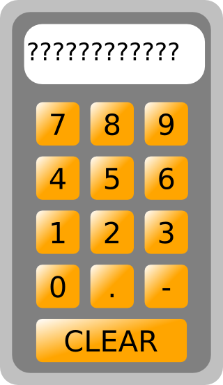
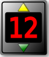

MBLogic
for an open world in automation
MBLogic
for an open world in automation
Compound Objects
Compound Objects are constructed of multiple simple objects.
Numeric Keypads
Numeric keypads can be used to enter numeric values. A numeric keypad is a compound object that consists of a number of push buttons and a numeric display.
A numeric keypad operates like a calculator. The numeric keys append digits to the numeric display. When the decimal point '.' key is pressed, subsequent digits are appended to the right of the decimal. The sign key '-' toggles the sign. The clear key 'CLR' resets the accumulated number.

A separate "store" button must be added to write the actual keypad contents to the HMI server. Store keys come in integer and floating point versions, depending on the numeric type desired.
- Drag a numeric keypad onto the drawing.
- Drag a store key onto the drawing.
- Select the store key.
- Set the "id" property.
Since numeric keypads depend on having a specific name, you can have one standard keypad per HMI web page. If you need more than one keypad you will need to customise the numeric keypad to use a different name (copy the SVG file and change the embedded Javascript names).
You can however use the same keypad to provide input to different server tags by simply using different store keys. You can use as many store keys as you wish, but they will all derive their data from the same keypad (unless you modify them appropriately).
Numeric Increment/Decrement
Numeric increment/decrement objects allow numeric values to be altered by incrementing or decrementing them. A numeric increment/decrement object simply consists of a numeric display box with push buttons. The push buttons increment or decrement the value.

- Drag a numeric display box onto the drawing. Boxes with a wide rims are provided for this purpose.
- Add numeric digits (see the section on text and numbers for details). Set the "id" property appropriately.
- Drag increment and decrement push buttons onto the drawing and position them in suitable locations. Set the "id" properties appropriately.